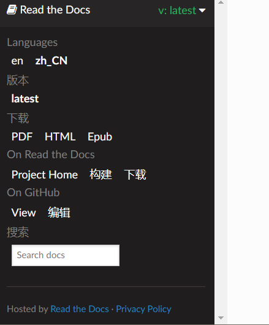

Switch Between Languages/切换语言¶
There are now versions in two languages.
现在有两种语言的版本。
English/英文
Chinese/中文
You can easily change from one language to another by the panel on the sidebar like below. Just click on the Read the Docs title button on the left-bottom corner if it is folded.（En is an English docs and zh_CN is a Chinese docs）
如下图所示，你可使用边栏的面板进行语言的切换。如果该面板被折叠，点击左下角 Read the Docs 标题按钮来显示它。 （en是英文文档，zh_CN是中文文档）

Switch Between Languages/切换语言¶